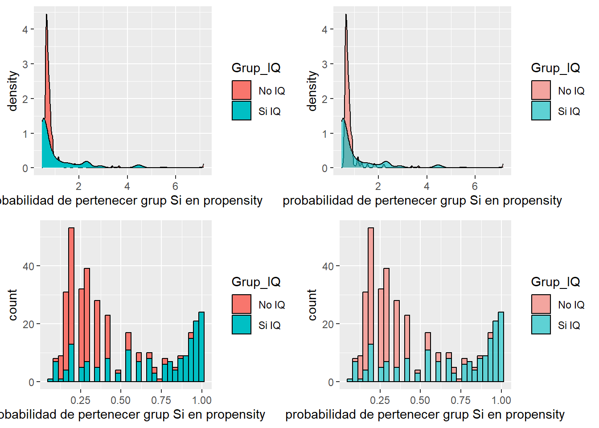
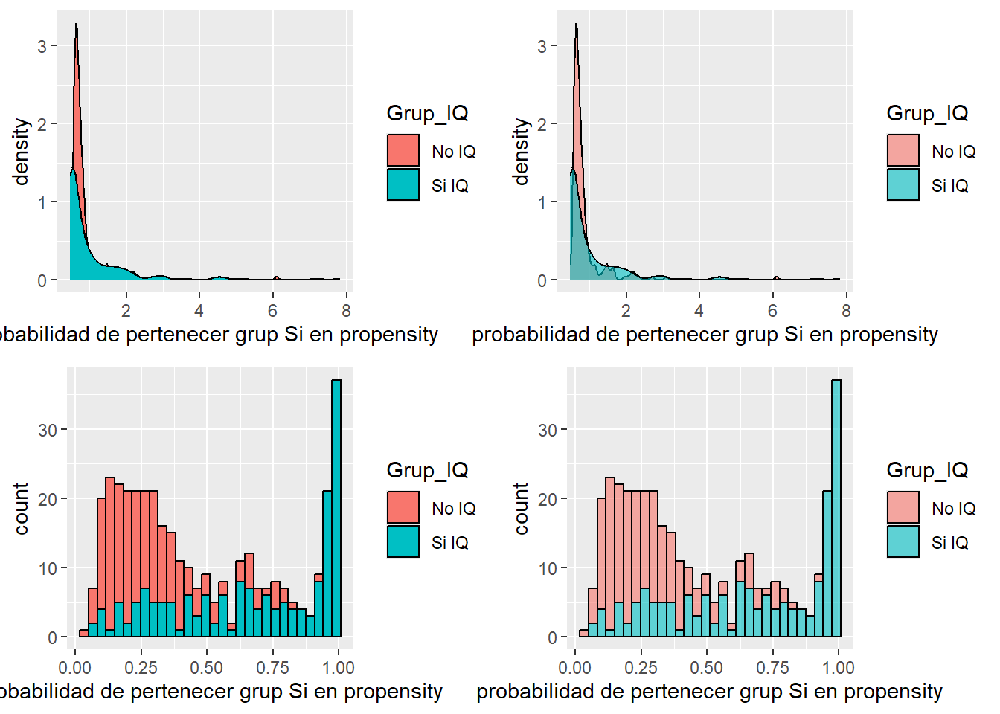
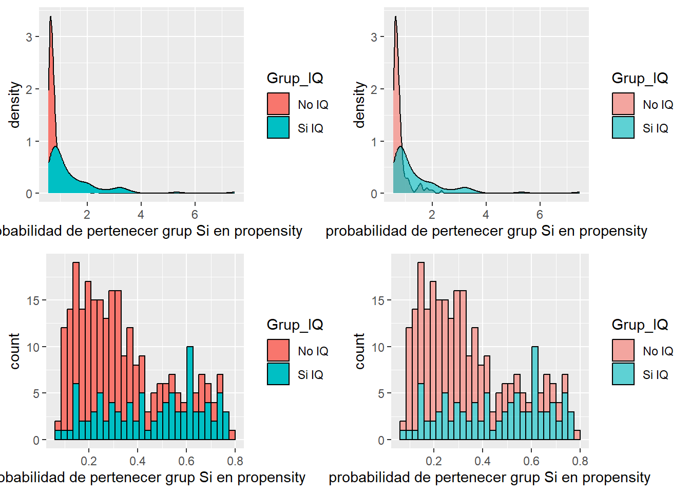

if(!require('pacman')){install.packages('pacman')}Loading required package: pacmanpacman::p_load(tidyverse,survey, tableone, ggpubr)if(!require('pacman')){install.packages('pacman')}Loading required package: pacmanpacman::p_load(tidyverse,survey, tableone, ggpubr)datos_imputados <- readRDS('Datos_imputados.rds') %>%
select(c(-NHC), identificador, everything())datos_imputados# A tibble: 371 × 50
identificador Grup_IQ edat_IQ sexe_home Pes Talla_m IMC plaquetes_preIQ
<int> <fct> <dbl> <fct> <dbl> <dbl> <dbl> <dbl>
1 1 No IQ 70 home 87 1.71 29.8 67
2 2 No IQ 79 dona 56 1.56 23.0 182
3 3 No IQ 64 home 73 1.7 25.3 66
4 4 No IQ 58 dona 50 1.57 20.3 152
5 5 No IQ 54 home 99 1.73 33.1 60
6 6 No IQ 70 home 125 1.8 38.6 102
7 7 No IQ 74 dona 62 1.5 27.6 104
8 8 No IQ 74 dona 71 1.48 32.4 104
9 9 No IQ 74 dona 58 1.56 23.8 104
10 10 No IQ 82 dona 60 1.59 23.7 61
# ℹ 361 more rows
# ℹ 42 more variables: Alb_gL_preIQ <dbl>, BB_mgdL_preIQ <dbl>,
# INR_preIQ <dbl>, AST_preIQ <dbl>, ALT_preIQ <dbl>, FA_preIQ <dbl>,
# GGT_preIQ <dbl>, Urea_mgdL_preIQ <dbl>, Creat_mgdL_preIQ <dbl>,
# MidaMelsa_mm <dbl>, FsC_Elastografia <dbl>, FsC <dbl>, hvpg <dbl>,
# Charlson_Index <dbl>, Pughpunts_basal <dbl>, MELD_basal <dbl>,
# Enol_Actiu <fct>, DIabetes <fct>, etiol_OH <fct>, TTO_Estatinas <fct>, …datos_imputados_transformados <- datos_imputados %>%
mutate(
DIabetes = droplevels(DIabetes,c('Metformina', 'Altres','ADO', 'dieta', 'ADO+Insulina','metformina+altres','ADO')),
SignesIndirectes_HTP = droplevels(SignesIndirectes_HTP,c('dubtós')),
presenciaCSPH = case_when(presenciaCSPH =='indeterminat' ~ 'no CSPH', TRUE ~ presenciaCSPH)
) %>%
select('identificador','Grup_IQ','edat_IQ','sexe_home',"IMC",'etiol_OH','Enol_Actiu',
"Charlson_Index","plaquetes_preIQ","DIabetes",'Pughpunts_basal',
'colaterals_shunts','MELD_basal','Alb_gL_preIQ','INR_preIQ','BB_mgdL_preIQ','Creat_mgdL_preIQ',
'HCC_prev','SignesIndirectes_HTP')variables_propensity <- c(
'Grup_IQ','edat_IQ','sexe_home',"IMC",'etiol_OH','Enol_Actiu',
"Charlson_Index","plaquetes_preIQ","DIabetes",'Pughpunts_basal',
'colaterals_shunts','MELD_basal','Alb_gL_preIQ','INR_preIQ','BB_mgdL_preIQ','Creat_mgdL_preIQ',
'HCC_prev','SignesIndirectes_HTP')mod_propensity_1 <- glm(
formula = Grup_IQ ~
HCC_prev +
sexe_home +
Charlson_Index
,
data = datos_imputados_transformados,
family=binomial(link="logit") )datos_imputados_propensity_1 <- datos_imputados_transformados %>%
mutate( prediciones = predict( mod_propensity_1 , datos_imputados_transformados , type="response") )
datos_imputados_propensity_1 <- datos_imputados_propensity_1 %>%
mutate(standarized_weights = case_when(
Grup_IQ == 'Si IQ' ~ (177/(371))/ ( prediciones),
Grup_IQ == 'No IQ' ~ (194/(371))/ (1-prediciones)
)) datos_imputados_propensity_1# A tibble: 371 × 21
identificador Grup_IQ edat_IQ sexe_home IMC etiol_OH Enol_Actiu
<int> <fct> <dbl> <fct> <dbl> <fct> <fct>
1 1 No IQ 70 home 29.8 no no
2 2 No IQ 79 dona 23.0 no no
3 3 No IQ 64 home 25.3 no no
4 4 No IQ 58 dona 20.3 si si
5 5 No IQ 54 home 33.1 si si
6 6 No IQ 70 home 38.6 no no
7 7 No IQ 74 dona 27.6 no no
8 8 No IQ 74 dona 32.4 no no
9 9 No IQ 74 dona 23.8 no no
10 10 No IQ 82 dona 23.7 no no
# ℹ 361 more rows
# ℹ 14 more variables: Charlson_Index <dbl>, plaquetes_preIQ <dbl>,
# DIabetes <fct>, Pughpunts_basal <dbl>, colaterals_shunts <fct>,
# MELD_basal <dbl>, Alb_gL_preIQ <dbl>, INR_preIQ <dbl>, BB_mgdL_preIQ <dbl>,
# Creat_mgdL_preIQ <dbl>, HCC_prev <fct>, SignesIndirectes_HTP <fct>,
# prediciones <dbl>, standarized_weights <dbl>ggpubr::ggarrange(
plotlist = list(
datos_imputados_propensity_1 %>%
ggplot(aes(standarized_weights, fill = Grup_IQ)) +
geom_density() +
labs(x = 'probabilidad de pertenecer grup Si en propensity')
,
datos_imputados_propensity_1 %>%
ggplot(aes(standarized_weights, fill = Grup_IQ)) +
geom_density(alpha = 0.6) +
labs(x = 'probabilidad de pertenecer grup Si en propensity')
,
datos_imputados_propensity_1 %>%
ggplot(aes(prediciones, fill = Grup_IQ)) +
geom_histogram(color = 'black', alpha = 1) +
labs(x = 'probabilidad de pertenecer grup Si en propensity')
,
datos_imputados_propensity_1 %>%
ggplot(aes(prediciones, fill = Grup_IQ)) +
geom_histogram(color = 'black', alpha = 0.6) +
labs(x = 'probabilidad de pertenecer grup Si en propensity')
))`stat_bin()` using `bins = 30`. Pick better value with `binwidth`.
`stat_bin()` using `bins = 30`. Pick better value with `binwidth`.
iptwdatos_propensity_survey_1 <- svydesign(
ids = ~ 1,
data = datos_imputados_propensity_1,
strata = ~Grup_IQ,
weights = ~ datos_imputados_propensity_1$standarized_weights)
Propensity_table_Weighted_1 <- svyCreateTableOne(
vars= datos_imputados_propensity_1 %>% select(-c(Grup_IQ, identificador,standarized_weights,prediciones )) %>% names(),
strata = "Grup_IQ",
data = iptwdatos_propensity_survey_1,
addOverall = T,
includeNA = T,
smd =TRUE)
print(Propensity_table_Weighted_1, smd = TRUE) Stratified by Grup_IQ
Overall No IQ Si IQ
n 370.23 182.89 187.34
edat_IQ (mean (SD)) 64.44 (11.01) 64.17 (10.66) 64.70 (11.36)
sexe_home = home (%) 227.1 (61.3) 112.8 (61.7) 114.3 (61.0)
IMC (mean (SD)) 27.21 (5.07) 27.66 (4.45) 26.77 (5.58)
etiol_OH = si (%) 116.4 (31.4) 61.8 (33.8) 54.6 (29.2)
Enol_Actiu = si (%) 62.0 (16.8) 29.7 (16.3) 32.3 (17.2)
Charlson_Index (mean (SD)) 4.96 (1.98) 4.96 (1.55) 4.95 (2.33)
plaquetes_preIQ (mean (SD)) 125.50 (66.52) 102.53 (45.09) 147.92 (75.91)
DIabetes = insulina (%) 121.7 (32.9) 70.9 (38.8) 50.9 (27.1)
Pughpunts_basal (mean (SD)) 5.59 (1.00) 5.55 (0.87) 5.62 (1.11)
colaterals_shunts = si (%) 154.6 (41.8) 85.2 (46.6) 69.4 (37.0)
MELD_basal (mean (SD)) 9.31 (2.92) 9.42 (2.21) 9.21 (3.49)
Alb_gL_preIQ (mean (SD)) 36.72 (5.61) 36.69 (5.00) 36.74 (6.15)
INR_preIQ (mean (SD)) 1.17 (0.20) 1.18 (0.14) 1.16 (0.24)
BB_mgdL_preIQ (mean (SD)) 1.25 (0.91) 1.35 (0.83) 1.17 (0.98)
Creat_mgdL_preIQ (mean (SD)) 0.87 (0.39) 0.82 (0.21) 0.92 (0.50)
HCC_prev = si (%) 35.5 ( 9.6) 15.7 ( 8.6) 19.8 (10.6)
SignesIndirectes_HTP = si (%) 306.3 (82.7) 180.7 (98.8) 125.7 (67.1)
Stratified by Grup_IQ
p test SMD
n
edat_IQ (mean (SD)) 0.696 0.048
sexe_home = home (%) 0.911 0.013
IMC (mean (SD)) 0.168 0.177
etiol_OH = si (%) 0.411 0.099
Enol_Actiu = si (%) 0.823 0.026
Charlson_Index (mean (SD)) 0.985 0.002
plaquetes_preIQ (mean (SD)) <0.001 0.727
DIabetes = insulina (%) 0.029 0.249
Pughpunts_basal (mean (SD)) 0.598 0.073
colaterals_shunts = si (%) 0.106 0.195
MELD_basal (mean (SD)) 0.549 0.073
Alb_gL_preIQ (mean (SD)) 0.935 0.010
INR_preIQ (mean (SD)) 0.359 0.109
BB_mgdL_preIQ (mean (SD)) 0.106 0.199
Creat_mgdL_preIQ (mean (SD)) 0.015 0.248
HCC_prev = si (%) 0.633 0.069
SignesIndirectes_HTP = si (%) <0.001 0.929Supón que ha habido unos 300 modelos entremedio, pero ya está. No hemos conseguido afinar más la fórmula. Esta es el mejor propensity que hemos logrado. Veamos que tal ajusta.
mod_propensity_2 <- glm(
formula = Grup_IQ ~
SignesIndirectes_HTP +
HCC_prev +
DIabetes +
sexe_home +
Enol_Actiu +
plaquetes_preIQ +
log(sqrt(Charlson_Index)) +
Alb_gL_preIQ +
log(IMC) +
Pughpunts_basal +
log(BB_mgdL_preIQ) +
Creat_mgdL_preIQ +
INR_preIQ
,
data = datos_imputados_transformados,
family=binomial(link="logit") )datos_imputados_propensity_2 <- datos_imputados_transformados %>%
mutate(prediciones = predict(mod_propensity_2, datos_imputados_transformados, type = "response"))
datos_imputados_propensity_2 <- datos_imputados_propensity_2 %>%
mutate(standarized_weights = case_when(
Grup_IQ == 'Si IQ' ~ (177/(371))/ ( prediciones),
Grup_IQ == 'No IQ' ~ (194/(371))/ (1-prediciones)
)) datos_imputados_propensity_2# A tibble: 371 × 21
identificador Grup_IQ edat_IQ sexe_home IMC etiol_OH Enol_Actiu
<int> <fct> <dbl> <fct> <dbl> <fct> <fct>
1 1 No IQ 70 home 29.8 no no
2 2 No IQ 79 dona 23.0 no no
3 3 No IQ 64 home 25.3 no no
4 4 No IQ 58 dona 20.3 si si
5 5 No IQ 54 home 33.1 si si
6 6 No IQ 70 home 38.6 no no
7 7 No IQ 74 dona 27.6 no no
8 8 No IQ 74 dona 32.4 no no
9 9 No IQ 74 dona 23.8 no no
10 10 No IQ 82 dona 23.7 no no
# ℹ 361 more rows
# ℹ 14 more variables: Charlson_Index <dbl>, plaquetes_preIQ <dbl>,
# DIabetes <fct>, Pughpunts_basal <dbl>, colaterals_shunts <fct>,
# MELD_basal <dbl>, Alb_gL_preIQ <dbl>, INR_preIQ <dbl>, BB_mgdL_preIQ <dbl>,
# Creat_mgdL_preIQ <dbl>, HCC_prev <fct>, SignesIndirectes_HTP <fct>,
# prediciones <dbl>, standarized_weights <dbl>ggpubr::ggarrange(
plotlist = list(
datos_imputados_propensity_2 %>%
ggplot(aes(standarized_weights, fill = Grup_IQ)) +
geom_density() +
labs(x = 'probabilidad de pertenecer grup Si en propensity')
,
datos_imputados_propensity_2 %>%
ggplot(aes(standarized_weights, fill = Grup_IQ)) +
geom_density(alpha = 0.6) +
labs(x = 'probabilidad de pertenecer grup Si en propensity')
,
datos_imputados_propensity_2 %>%
ggplot(aes(prediciones, fill = Grup_IQ)) +
geom_histogram(color = 'black', alpha = 1) +
labs(x = 'probabilidad de pertenecer grup Si en propensity')
,
datos_imputados_propensity_2 %>%
ggplot(aes(prediciones, fill = Grup_IQ)) +
geom_histogram(color = 'black', alpha = 0.6) +
labs(x = 'probabilidad de pertenecer grup Si en propensity')
))`stat_bin()` using `bins = 30`. Pick better value with `binwidth`.
`stat_bin()` using `bins = 30`. Pick better value with `binwidth`.
iptwdatos_propensity_2 <- svydesign(
ids = ~ 1,
data = datos_imputados_propensity_2,
strata = ~Grup_IQ,
weights = ~ datos_imputados_propensity_2$standarized_weights)
Propensity_table_Weighted_2 <- svyCreateTableOne(
vars= datos_imputados_propensity_2 %>% select(-c(Grup_IQ, identificador,standarized_weights,prediciones )) %>% names(),
strata = "Grup_IQ",
data = iptwdatos_propensity_2,
addOverall = T,
includeNA = T,
smd =TRUE)
print(Propensity_table_Weighted_2, smd = TRUE) Stratified by Grup_IQ
Overall No IQ Si IQ
n 353.56 166.15 187.42
edat_IQ (mean (SD)) 64.47 (10.77) 64.03 (10.58) 64.85 (10.95)
sexe_home = home (%) 221.4 (62.6) 105.6 (63.6) 115.8 (61.8)
IMC (mean (SD)) 27.31 (4.84) 27.27 (4.36) 27.35 (5.24)
etiol_OH = si (%) 109.6 (31.0) 54.3 (32.7) 55.4 (29.5)
Enol_Actiu = si (%) 61.0 (17.3) 28.6 (17.2) 32.4 (17.3)
Charlson_Index (mean (SD)) 4.98 (2.08) 4.86 (1.44) 5.08 (2.51)
plaquetes_preIQ (mean (SD)) 115.98 (58.26) 107.56 (50.39) 123.44 (63.65)
DIabetes = insulina (%) 117.1 (33.1) 57.9 (34.9) 59.1 (31.5)
Pughpunts_basal (mean (SD)) 5.59 (0.99) 5.63 (0.91) 5.56 (1.06)
colaterals_shunts = si (%) 158.5 (44.8) 75.3 (45.3) 83.2 (44.4)
MELD_basal (mean (SD)) 9.25 (2.70) 9.40 (2.20) 9.13 (3.08)
Alb_gL_preIQ (mean (SD)) 36.52 (5.51) 36.30 (5.16) 36.70 (5.81)
INR_preIQ (mean (SD)) 1.17 (0.19) 1.18 (0.14) 1.16 (0.23)
BB_mgdL_preIQ (mean (SD)) 1.23 (0.81) 1.27 (0.79) 1.19 (0.82)
Creat_mgdL_preIQ (mean (SD)) 0.85 (0.35) 0.83 (0.22) 0.87 (0.44)
HCC_prev = si (%) 33.0 ( 9.3) 13.3 ( 8.0) 19.6 (10.5)
SignesIndirectes_HTP = si (%) 316.5 (89.5) 159.4 (95.9) 157.1 (83.8)
Stratified by Grup_IQ
p test SMD
n
edat_IQ (mean (SD)) 0.572 0.077
sexe_home = home (%) 0.781 0.037
IMC (mean (SD)) 0.908 0.016
etiol_OH = si (%) 0.619 0.068
Enol_Actiu = si (%) 0.988 0.002
Charlson_Index (mean (SD)) 0.482 0.111
plaquetes_preIQ (mean (SD)) 0.029 0.276
DIabetes = insulina (%) 0.591 0.071
Pughpunts_basal (mean (SD)) 0.668 0.072
colaterals_shunts = si (%) 0.889 0.019
MELD_basal (mean (SD)) 0.396 0.102
Alb_gL_preIQ (mean (SD)) 0.612 0.073
INR_preIQ (mean (SD)) 0.357 0.104
BB_mgdL_preIQ (mean (SD)) 0.418 0.101
Creat_mgdL_preIQ (mean (SD)) 0.297 0.107
HCC_prev = si (%) 0.607 0.084
SignesIndirectes_HTP = si (%) 0.010 0.409Se puede utilizar el resultado de un propensity para encajar otro. en este caso. Utilizamos los resultados de un propensity previo para poder crear uno nuevo con restricción de casos outlier que no iban a encajar de ninguna forma
# Filtrado de pacientes excluídos por no encajar en ningún propensity score ----
Pacientes_excluidos_propensity <- datos_imputados_propensity_2 %>%
filter(!between(prediciones,0.1,0.80)) %>% # eliminamos los propensities extremos.
select(-c(prediciones,standarized_weights))
Pacientes_excluidos_propensity$identificador [1] 5 17 51 58 60 67 83 86 118 121 129 135 137 162 167 168 177 190
[19] 195 197 199 200 205 206 207 212 213 214 215 216 217 221 222 225 229 231
[37] 232 233 234 238 240 244 246 247 249 250 252 253 255 257 259 260 262 263
[55] 268 270 271 273 275 277 280 281 285 288 290 293 296 297 298 306 308 313
[73] 319 321 322 323 324 325 328 332 333 334 336 337 338 339 340 343 344 347
[91] 348 349 352 353 356 358 359 361 364 365 367# Filtrado de pacientes incluidos por encajar en propensity score ----
Pacientes_finales <- datos_imputados_propensity_2 %>%
filter(between(prediciones,0.1,0.80)) %>%
select(-c(prediciones,standarized_weights))
Pacientes_finales# A tibble: 270 × 19
identificador Grup_IQ edat_IQ sexe_home IMC etiol_OH Enol_Actiu
<int> <fct> <dbl> <fct> <dbl> <fct> <fct>
1 1 No IQ 70 home 29.8 no no
2 2 No IQ 79 dona 23.0 no no
3 3 No IQ 64 home 25.3 no no
4 4 No IQ 58 dona 20.3 si si
5 6 No IQ 70 home 38.6 no no
6 7 No IQ 74 dona 27.6 no no
7 8 No IQ 74 dona 32.4 no no
8 9 No IQ 74 dona 23.8 no no
9 10 No IQ 82 dona 23.7 no no
10 11 No IQ 75 dona 29.3 no no
# ℹ 260 more rows
# ℹ 12 more variables: Charlson_Index <dbl>, plaquetes_preIQ <dbl>,
# DIabetes <fct>, Pughpunts_basal <dbl>, colaterals_shunts <fct>,
# MELD_basal <dbl>, Alb_gL_preIQ <dbl>, INR_preIQ <dbl>, BB_mgdL_preIQ <dbl>,
# Creat_mgdL_preIQ <dbl>, HCC_prev <fct>, SignesIndirectes_HTP <fct>mod_propensity_final <- glm(
formula = Grup_IQ ~
SignesIndirectes_HTP +
HCC_prev +
DIabetes +
sexe_home +
Enol_Actiu +
plaquetes_preIQ +
log(sqrt(Charlson_Index)) +
Alb_gL_preIQ +
log(IMC) +
Pughpunts_basal +
log(BB_mgdL_preIQ) +
Creat_mgdL_preIQ +
INR_preIQ
,
data = Pacientes_finales,
family=binomial(link="logit") )Pacientes_finales_IPTW <- Pacientes_finales %>%
mutate(prediciones=predict(mod_propensity_final,Pacientes_finales,type="response") ) %>%
mutate(standarized_weights = case_when(
Grup_IQ == 'Si IQ' ~ (177/(371))/ ( prediciones),
Grup_IQ == 'No IQ' ~ (194/(371))/ (1-prediciones)
)) ggpubr::ggarrange(
plotlist = list(
Pacientes_finales_IPTW %>%
ggplot(aes(standarized_weights, fill = Grup_IQ)) +
geom_density() +
labs(x = 'probabilidad de pertenecer grup Si en propensity')
,
Pacientes_finales_IPTW %>%
ggplot(aes(standarized_weights, fill = Grup_IQ)) +
geom_density(alpha = 0.6) +
labs(x = 'probabilidad de pertenecer grup Si en propensity')
,
Pacientes_finales_IPTW %>%
ggplot(aes(prediciones, fill = Grup_IQ)) +
geom_histogram(color = 'black', alpha = 1) +
labs(x = 'probabilidad de pertenecer grup Si en propensity')
,
Pacientes_finales_IPTW %>%
ggplot(aes(prediciones, fill = Grup_IQ)) +
geom_histogram(color = 'black', alpha = 0.6) +
labs(x = 'probabilidad de pertenecer grup Si en propensity')
))`stat_bin()` using `bins = 30`. Pick better value with `binwidth`.
`stat_bin()` using `bins = 30`. Pick better value with `binwidth`.
# Datos propensity ----
Pacientes_finales_iptw_survey <- svydesign(
ids = ~ 1,
data = Pacientes_finales_IPTW,
strata = ~Grup_IQ,
weights = ~ Pacientes_finales_IPTW$standarized_weights)
Pacientes_finales_IPTW_table_Weighted <- svyCreateTableOne(
vars= Pacientes_finales_IPTW %>% select(-c(Grup_IQ, identificador,standarized_weights,prediciones )) %>% names(),
strata = "Grup_IQ",
data = Pacientes_finales_iptw_survey,
addOverall = T,
includeNA = T,
smd =TRUE)
print(Pacientes_finales_IPTW_table_Weighted , smd = TRUE) Stratified by Grup_IQ
Overall No IQ Si IQ
n 274.58 140.96 133.63
edat_IQ (mean (SD)) 64.62 (10.73) 64.42 (10.74) 64.82 (10.77)
sexe_home = home (%) 169.5 (61.7) 87.2 (61.9) 82.3 (61.6)
IMC (mean (SD)) 27.14 (4.55) 27.06 (3.81) 27.21 (5.23)
etiol_OH = si (%) 89.4 (32.5) 47.4 (33.6) 42.0 (31.4)
Enol_Actiu = si (%) 44.0 (16.0) 23.0 (16.3) 21.1 (15.8)
Charlson_Index (mean (SD)) 4.89 (1.93) 4.86 (1.46) 4.91 (2.33)
plaquetes_preIQ (mean (SD)) 110.76 (50.95) 109.21 (49.88) 112.38 (52.25)
DIabetes = insulina (%) 92.4 (33.7) 48.8 (34.6) 43.6 (32.6)
Pughpunts_basal (mean (SD)) 5.54 (0.96) 5.56 (0.81) 5.53 (1.10)
colaterals_shunts = si (%) 129.4 (47.1) 64.2 (45.6) 65.2 (48.8)
MELD_basal (mean (SD)) 9.17 (2.73) 9.28 (2.20) 9.04 (3.21)
Alb_gL_preIQ (mean (SD)) 36.73 (5.45) 36.57 (5.06) 36.90 (5.86)
INR_preIQ (mean (SD)) 1.17 (0.21) 1.17 (0.14) 1.17 (0.27)
BB_mgdL_preIQ (mean (SD)) 1.21 (0.73) 1.22 (0.68) 1.20 (0.78)
Creat_mgdL_preIQ (mean (SD)) 0.84 (0.26) 0.85 (0.22) 0.83 (0.30)
HCC_prev = si (%) 11.4 ( 4.1) 6.0 ( 4.3) 5.3 ( 4.0)
SignesIndirectes_HTP = si (%) 271.6 (98.9) 139.4 (98.9) 132.2 (99.0)
Stratified by Grup_IQ
p test SMD
n
edat_IQ (mean (SD)) 0.802 0.038
sexe_home = home (%) 0.971 0.006
IMC (mean (SD)) 0.841 0.033
etiol_OH = si (%) 0.761 0.047
Enol_Actiu = si (%) 0.922 0.015
Charlson_Index (mean (SD)) 0.887 0.024
plaquetes_preIQ (mean (SD)) 0.686 0.062
DIabetes = insulina (%) 0.778 0.042
Pughpunts_basal (mean (SD)) 0.818 0.035
colaterals_shunts = si (%) 0.676 0.064
MELD_basal (mean (SD)) 0.571 0.087
Alb_gL_preIQ (mean (SD)) 0.709 0.059
INR_preIQ (mean (SD)) 0.995 0.001
BB_mgdL_preIQ (mean (SD)) 0.837 0.030
Creat_mgdL_preIQ (mean (SD)) 0.677 0.057
HCC_prev = si (%) 0.903 0.015
SignesIndirectes_HTP = si (%) 0.961 0.006Ahora teniendo los id’s de los pacientes en claro y estos pesos, podemos ir a hacer cualquier análisis que permita ponderación y se harán con una confusión perfectamente controlada.
regresiones lineales o modelos de supervivencia son las opciones más plausibles para este método.
Pacientes_finales_IPTW %>%
select(identificador, standarized_weights)# A tibble: 270 × 2
identificador standarized_weights
<int> <dbl>
1 1 0.697
2 2 0.879
3 3 0.707
4 4 1.12
5 6 0.720
6 7 0.627
7 8 0.756
8 9 0.761
9 10 0.719
10 11 1.51
# ℹ 260 more rows